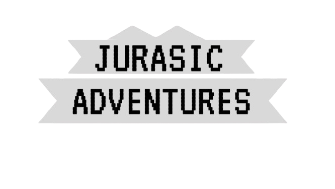

You are a timetraveler that gets stuck in the Jurasic Period.
Your timemachine breaks when you get there, and now you are stuck.
Now you must make your way through to fix the timemachine and get back to the current period
Get Started